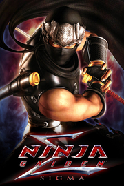

NINJA GAIDEN: Master Collection NINJA GAIDEN Σ
Detalles
|  | |
| Tiempo de juego | No Jugado |
| Última actividad | Nunca |
| Añadido | 11/6/2024 15:35:16 |
| Modificado | 1/27/2025 15:32:26 |
| Estado de finalización | No Jugado |
| Librería | Playnite |
| Fuente | 2TB GAS |
| Plataforma | PC (Windows) |
| Fecha de lanzamiento | 6/9/2021 |
| Puntuación de la Comunidad | 78 |
| Puntuación de la Crítica | |
| Puntuación de usuario | |
| Género | Acción Aventura |
| Desarrollador | KOEI TECMO GAMES CO., LTD. |
| Editor | KOEI TECMO GAMES CO., LTD. |
| Característica | Cloud Saves Compat. Parcial Con Mando Logros De Préstamo Familiar Un Jugador |
| Enlaces | Punto de encuentro Discusiones Guías Noticias Página de la tienda PCGamingWiki Logros |
| Tag | Acción Anime Aventura Buena trama Clásico Difíciles Exploración Gran banda sonora Hack and slash Juegos de acción de personajes Luchador espectacular Ninjas Oscuros Sangriento Tercera persona Un jugador Violentos |
Descripción
Nota: Este producto está incluido en "NINJA GAIDEN: Master Collection" y "NINJA GAIDEN: Master Collection Deluxe Edition". No se puede comprar de manera individual.
Nota: Visita la web oficial para saber más sobre este contenido.

Disfruta de 3 juegos de la saga NINJA GAIDEN en un solo título.
Todos son tan divertidos como recuerdas, manteniendo la acción frenética de los juegos originales.
¡Prepárate para luchar contra oponentes temibles!

Además de Ryu Hayabusa, también hay otros 4 personajes jugables: Ayane, Rachel, Momiji y Kasumi. Une fuerzas con tus personajes favoritos y alterna libremente entre ellos durante la batalla.
※Las heroínas incluidas en esta versión son idénticas a las de las entregas originales. Además, los personajes jugables y las escenas (modos) varían en función de cada juego.
Todos los modos de juego y atuendos de DLC lanzados anteriormente están incluidos en esta entrega. Aparte de Ryu Hayabusa, los demás personajes también podrán elegir de entre distintos atuendos, permitiéndote disfrutar de las espectaculares batallas con el aspecto que prefieras.
■Juegos incluidos
NINJA GAIDEN Σ
NINJA GAIDEN Σ2
NINJA GAIDEN 3: Razor's Edge
※El multijugador en línea no está disponible para las “MISIONES EN EQUIPO” en NINJA GAIDEN Σ2.
※No incluye la "Batalla de clan" "Sombras del mundo” en NINJA GAIDEN 3 Razor's Edge.
El multijugador en línea no está disponible para las “pruebas ninja”.
※"NINJA GAIDEN Σ2" y "NINJA GAIDEN 3: Razor's Edge" también estarán disponibles en chino tradicional.

Además de poder realizar las impresionantes técnicas sin parangón de "Ryu Hayabusa", un joven ninja que ha aprendido las artes ninja del Estilo Hayabusa, en los preciosos escenarios de un Japón occidentalizado y con aspectos del mundo espiritual, todo el contenido de este juego hará las delicias de cualquier aficionado de los juegos de acción.
■Disfruta de la épica historia con el "Modo Héroe"
Al seleccionar la dificultad "Modo Héroe", este se activa cuando tu salud está baja. Con el Modo Héroe, podrás protegerte y esquivar automáticamente, además de usar tu ninpo tanto como quieras. Hasta los jugadores menos avezados podrán sentir la sensación de escapar en el último instante, volver las tornas contra los enemigos y avanzar en la partida. No hace falta decir que los modos de dificultad para los que buscan una experiencia más exigente también estarán disponibles.

Conviértete en Ryu Hayabusa, el ninja que ha heredado la legendaria "Espada del Dragón", y vive de nuevo la acción frenética en batallas que te llevarán por todo el mundo. El juego también incluye nuevas características como el "Modo Héroe", un modo en el que el jugador se cubrirá automáticamente cuando se encuentre contra las cuerdas.
■En la "CARRERA NINJA", tu velocidad determinará si vives o mueres
En el modo "CARRERA NINJA" deberás superar el mapa dentro un límite de tiempo a la vez que te abres paso entre tus enemigos. En este modo, el número de enemigos seguidos que derrotes se añadirá a tu "Combo de muertes", y a medida que tu Combo de muertes vaya aumentando, también lo hará tu daño. Además, podrás usar objetos por el camino que aumentan tanto la velocidad como el tiempo, por lo que atacar de manera incesante, derrotar enemigos tan rápido como te sea posible y usar objetos será clave en tu estrategia.
■Junto a Hayabusa, 3 heroínas resplandecientes se unen al campo de batalla
Las heroínas de la saga "NINJA GAIDEN": "Ayane", "Rachel", y "Momiji" aparecen como personajes jugables. En las "MISIONES EN EQUIPO", los jugadores podrán elegir a 2 personajes de entre Hayabusa y las 3 heroínas, pudiendo alternar entre ellos mientras completan la misión.

¡El juego de acción ninja definitivo está de vuelta! El juego ofrece un "desafío" extremo, a la vez que una "sensación de logro" igual de extrema. Vive la mejor entrega de acción de toda la saga.
■Acompañando a Ryu Hayabusa, ¡Ayane, Kasumi y Momiji también se unen a la batalla!
Además de "Ryu Hayabusa", el personaje principal, las ninjas "Ayane", "Kasumi" y "Momiji" también aparecen como personajes jugables. Y su participación no se limita únicamente a las misiones de historia "Reto de capítulo", ya que los 3 personajes también podrán usarse en las "PRUEBAS NINJA". Además, Ayane, la heroína de la saga "NINJA GAIDEN", cuenta con su propia historia.
■Emocionantes batallas en donde no podrás bajar la guardia
Se han añadido las "Pruebas de valentía", una fase especial para los aficionados a la saga que quieren disfrutar aún más de las batallas. En cada capítulo hay Calaveras de cristal ocultas que dan acceso a las distintas "Pruebas de valentía". Al entrar en estas zonas, los jugadores deberán hacer frente a los enemigos más formidables y temibles de la saga "NINJA GAIDEN".
■¡Mejorar a los personajes da más aliciente para volver a jugar!
Encontrando los "Escarabajos dorados" ocultos y usando el "Karma" obtenido durante las batallas, entre otras cosas, los jugadores pueden desbloquear nuevas armas y ninpo para mejorar a sus personajes. Por supuesto, las mejoras aplicadas se mantendrán durante las partidas nuevas sucesivas. Entre los movimientos que se pueden desbloquear, se han añadido algunos nuevos, como la "Oleada de la cigarra", que te permite esquivar cualquier ataque del enemigo, "Meditación", que te permite gastar tu indicador de Ki para recuperar salud, y más.
Nota: Visita la web oficial para saber más sobre este contenido.
[Acerca de NINJA GAIDEN: Master Collection]
Disfruta de 3 juegos de la saga NINJA GAIDEN en un solo título.
Todos son tan divertidos como recuerdas, manteniendo la acción frenética de los juegos originales.
¡Prepárate para luchar contra oponentes temibles!
Además de Ryu Hayabusa, también hay otros 4 personajes jugables: Ayane, Rachel, Momiji y Kasumi. Une fuerzas con tus personajes favoritos y alterna libremente entre ellos durante la batalla.
※Las heroínas incluidas en esta versión son idénticas a las de las entregas originales. Además, los personajes jugables y las escenas (modos) varían en función de cada juego.
Todos los modos de juego y atuendos de DLC lanzados anteriormente están incluidos en esta entrega. Aparte de Ryu Hayabusa, los demás personajes también podrán elegir de entre distintos atuendos, permitiéndote disfrutar de las espectaculares batallas con el aspecto que prefieras.
■Juegos incluidos
NINJA GAIDEN Σ
NINJA GAIDEN Σ2
NINJA GAIDEN 3: Razor's Edge
※El multijugador en línea no está disponible para las “MISIONES EN EQUIPO” en NINJA GAIDEN Σ2.
※No incluye la "Batalla de clan" "Sombras del mundo” en NINJA GAIDEN 3 Razor's Edge.
El multijugador en línea no está disponible para las “pruebas ninja”.
※"NINJA GAIDEN Σ2" y "NINJA GAIDEN 3: Razor's Edge" también estarán disponibles en chino tradicional.
[Acerca de NINJA GAIDEN Σ]
Además de poder realizar las impresionantes técnicas sin parangón de "Ryu Hayabusa", un joven ninja que ha aprendido las artes ninja del Estilo Hayabusa, en los preciosos escenarios de un Japón occidentalizado y con aspectos del mundo espiritual, todo el contenido de este juego hará las delicias de cualquier aficionado de los juegos de acción.
■Disfruta de la épica historia con el "Modo Héroe"
Al seleccionar la dificultad "Modo Héroe", este se activa cuando tu salud está baja. Con el Modo Héroe, podrás protegerte y esquivar automáticamente, además de usar tu ninpo tanto como quieras. Hasta los jugadores menos avezados podrán sentir la sensación de escapar en el último instante, volver las tornas contra los enemigos y avanzar en la partida. No hace falta decir que los modos de dificultad para los que buscan una experiencia más exigente también estarán disponibles.
[Acerca de NINJA GAIDEN Σ2]
Conviértete en Ryu Hayabusa, el ninja que ha heredado la legendaria "Espada del Dragón", y vive de nuevo la acción frenética en batallas que te llevarán por todo el mundo. El juego también incluye nuevas características como el "Modo Héroe", un modo en el que el jugador se cubrirá automáticamente cuando se encuentre contra las cuerdas.
■En la "CARRERA NINJA", tu velocidad determinará si vives o mueres
En el modo "CARRERA NINJA" deberás superar el mapa dentro un límite de tiempo a la vez que te abres paso entre tus enemigos. En este modo, el número de enemigos seguidos que derrotes se añadirá a tu "Combo de muertes", y a medida que tu Combo de muertes vaya aumentando, también lo hará tu daño. Además, podrás usar objetos por el camino que aumentan tanto la velocidad como el tiempo, por lo que atacar de manera incesante, derrotar enemigos tan rápido como te sea posible y usar objetos será clave en tu estrategia.
■Junto a Hayabusa, 3 heroínas resplandecientes se unen al campo de batalla
Las heroínas de la saga "NINJA GAIDEN": "Ayane", "Rachel", y "Momiji" aparecen como personajes jugables. En las "MISIONES EN EQUIPO", los jugadores podrán elegir a 2 personajes de entre Hayabusa y las 3 heroínas, pudiendo alternar entre ellos mientras completan la misión.
[Acerca de NINJA GAIDEN 3: Razor's Edge]
¡El juego de acción ninja definitivo está de vuelta! El juego ofrece un "desafío" extremo, a la vez que una "sensación de logro" igual de extrema. Vive la mejor entrega de acción de toda la saga.
■Acompañando a Ryu Hayabusa, ¡Ayane, Kasumi y Momiji también se unen a la batalla!
Además de "Ryu Hayabusa", el personaje principal, las ninjas "Ayane", "Kasumi" y "Momiji" también aparecen como personajes jugables. Y su participación no se limita únicamente a las misiones de historia "Reto de capítulo", ya que los 3 personajes también podrán usarse en las "PRUEBAS NINJA". Además, Ayane, la heroína de la saga "NINJA GAIDEN", cuenta con su propia historia.
■Emocionantes batallas en donde no podrás bajar la guardia
Se han añadido las "Pruebas de valentía", una fase especial para los aficionados a la saga que quieren disfrutar aún más de las batallas. En cada capítulo hay Calaveras de cristal ocultas que dan acceso a las distintas "Pruebas de valentía". Al entrar en estas zonas, los jugadores deberán hacer frente a los enemigos más formidables y temibles de la saga "NINJA GAIDEN".
■¡Mejorar a los personajes da más aliciente para volver a jugar!
Encontrando los "Escarabajos dorados" ocultos y usando el "Karma" obtenido durante las batallas, entre otras cosas, los jugadores pueden desbloquear nuevas armas y ninpo para mejorar a sus personajes. Por supuesto, las mejoras aplicadas se mantendrán durante las partidas nuevas sucesivas. Entre los movimientos que se pueden desbloquear, se han añadido algunos nuevos, como la "Oleada de la cigarra", que te permite esquivar cualquier ataque del enemigo, "Meditación", que te permite gastar tu indicador de Ki para recuperar salud, y más.